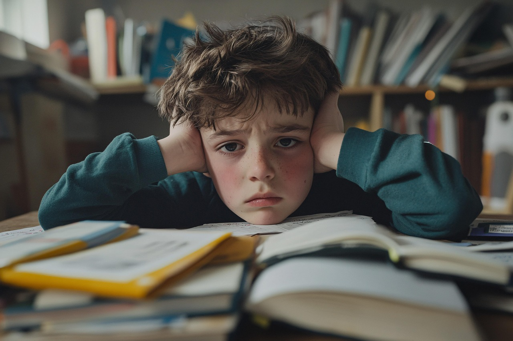
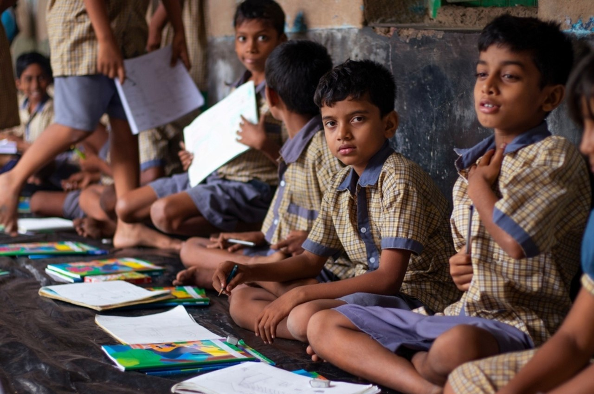
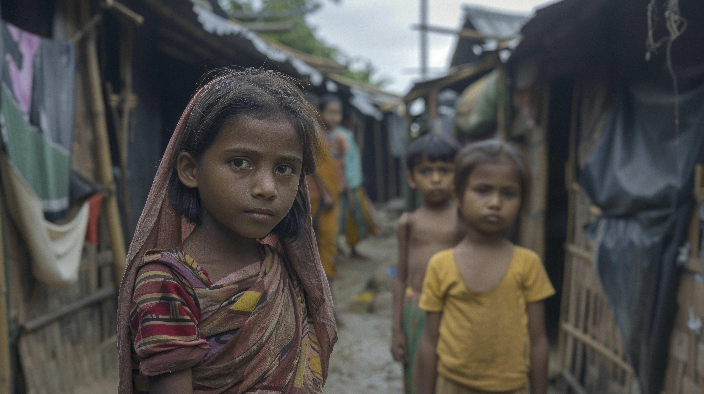
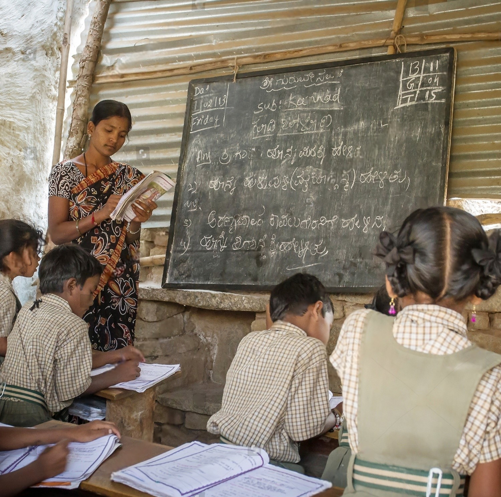
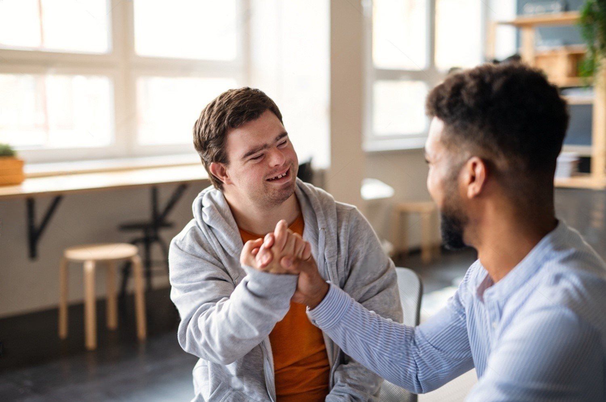

Challenges in Education
&
United Nations Goals for Quality Education

Education for All: Overcoming Challenges to Achieve SDG 4
Education is a fundamental right, yet millions of children and adults worldwide still lack access to quality learning opportunities. Several barriers hinder education, from poverty to lack of infrastructure. However, global efforts, including the United Nations Sustainable Development Goal 4 (SDG 4), aim to ensure inclusive and equitable education for all. Below, we explore the key challenges in education, the UN’s goals, and possible solutions to improve global learning.
Challenges in Education
Despite global progress, many obstacles still prevent access to quality education. Some of the biggest challenges include:

Lack of Access to Schools
Millions of children live in remote areas with no nearby schools. Poor infrastructure, including lack of classrooms, electricity, and clean water, makes learning difficult. In developing countries, children often travel long distances to attend school.

Poverty & Financial Barriers
Many families cannot afford school fees, books, uniforms, and transportation. Children from low-income families are more likely to drop out to work and support their households. Public schools may lack funding, leading to overcrowded classrooms and poor facilities.

Shortage of Qualified Teachers & Learning Materials
Many regions suffer from a lack of well-trained teachers, affecting education quality. Teachers often work with limited resources, outdated textbooks, and large class sizes. Inconsistent training programs lead to ineffective teaching methods.

Barriers for Children with Disabilities
Many schools lack facilities for students with special needs.Inadequate teacher training prevents proper support for disabled students.Social stigma and discrimination make education inaccessible for many disabled learners.
United Nations Goals for Quality Education (SDG 4)
To overcome these challenges, the United Nations established Sustainable Development Goal 4 (SDG 4), which aims to "Ensure inclusive and equitable quality education and promote lifelong learning opportunities for all" by 2030.
Free, Equitable, and Quality Education
Every child should have access to basic education without financial barriers.
Early Childhood Education
Ensuring young children receive quality preschool learning experiences.
Equal Access to Technical, Vocational, and Higher Education
Encouraging skill development and career opportunities.
Eliminating Gender Disparities
Promoting equal opportunities for girls and boys in education.
Improving Literacy & Numeracy
Reducing the number of youth and adults who cannot read or write.
Enhancing Teacher Training & Resources
Ensuring teachers receive proper education and materials to support students.
🌎 How is the World Working Toward SDG 4?
- Governments are introducing free education policies to remove financial barriers.
- NGOs and organizations like UNICEF, UNESCO, and the Global Partnership for Education support school development in poor regions.
- Technology is being used to bring digital education to remote communities.
- Campaigns and scholarships encourage higher female enrollment in schools.